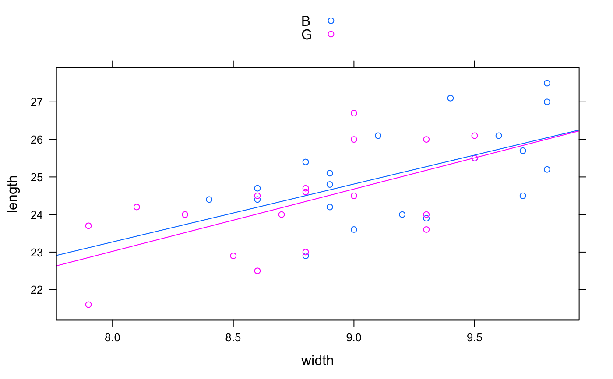

Make or add a scatter plot in a manner coordinated with plotFun.
plotPoints(x, data = parent.frame(), add = NULL, under = FALSE, panelfun = panel.xyplot, plotfun = xyplot, ..., plot = trellis.last.object())
| x | A formula specifying y ~ x or z ~ x&y |
|---|---|
| data | Data frame containing the variables to be plotted. If not specified, the variables will be looked up in the local environment |
| add | If |
| under | If |
| panelfun | Lattice panel function to be used for adding. Set only if you want something other than a scatter plot. Mainly, this is intended to add new functionality through other functions. |
| plotfun | Lattice function to be used for initial plot creation. Set only if you want something other than a scatter plot. Mainly, this is intended to add new functionality through other functions. |
| … | additional arguments |
| plot | a trellis plot, by default the most recently created one. If |
A trellis graphics object
if (require(mosaicData)) { plotPoints( width ~ length, data=KidsFeet, groups=sex, pch=20) f <- makeFun( lm( width ~ length * sex, data=KidsFeet)) plotFun( f(length=length,sex="G")~length, add=TRUE, col="pink") plotFun( f(length=length,sex="B")~length, add=TRUE) }#>#>